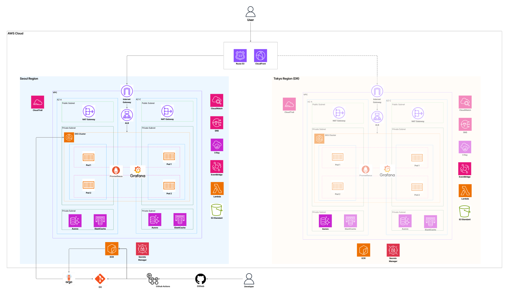

NewSugar
긴 뉴스를 간편하게 요약해주고, 퀴즈로 재미있게 소비하도록 돕는 뉴스 요약 서비스입니다.
문제정의 · 목표 · MVP
긴 뉴스 내용으로 인한 현대인의 낮은 뉴스 시청률 문제를 해결하고자, 길고 중복된 뉴스를 요약하고 흥미를 유도하는 서비스를 기획했습니다.
- 비즈니스 목표: 효율적이고 체계적인 정보 전달로 현대인이 뉴스를 더 쉽게 접하고 이해할 수 있는 접근성 확보
- 기술 목표: 뉴스를 간편하게 요약해주는 애플리케이션, 쉽고 재미있게 활용할 수 있는 경험, 안정적인 하이브리드 클라우드 환경
MVP 핵심 기능
인증 / 회원가입
기본 사용자 인증 흐름
뉴스 CRUD
뉴스 등록·수정·삭제·조회
오늘의 뉴스 요약
카테고리 선택 + 출처 뉴스 링크 제공
퀴즈 이벤트
오늘의 뉴스 관련 퀴즈로 흥미 유도
도메인 모델은 User, News, Quiz, Setting 등으로 구성했고, 로컬 검증 단계에서는 Docker Compose 기반 MySQL·백엔드 컨테이너로 클라우드 없이 핵심 기능 동작을 먼저 확인했습니다.
아키텍처 & 기술 선택

서울 리전을 Primary로, 도쿄 리전을 DR(Active-Passive)로 두는 멀티 리전 구조입니다. Route53 Health Check가 서울 리전 장애를 감지하면 도쿄 리전으로 자동 전환됩니다.
HPA 기반 자동 스케일링(2~10 replicas)으로 트래픽 변화에 대응하고, Blue/Green 무중단 배포를 구현
Multi-AZ 고가용성과 서울-도쿄 리전 간 자동 복제로 RPO 1분, RTO 15분 목표를 달성
카테고리별 뉴스 요약 데이터를 캐싱해 API 응답 속도 개선 및 DB 부하 감소
Multi-AZ 트래픽 분산, HTTPS 종료, Health Check 기반 자동 장애 전환
도메인 관리와 Health Check 기반 자동 Failover로 서울 장애 시 도쿄로 트래픽 전환
DB 비밀번호·JWT Secret·API Key 등을 암호화 중앙 관리해 하드코딩 방지
ALB/EKS/RDS 메트릭 수집, 분산 추적, 대시보드 시각화로 장애 조기 감지
코드 푸시부터 ECR 이미지 빌드, EKS 배포까지 완전 자동화된 CI/CD
서울 전체 장애 시 도쿄로 전환하는 Active-Passive 전략으로 평상시 비용 최소화
인프라를 코드로 관리하고 setup.sh 스크립트로 설치/삭제를 자동화
핵심 구현 기능
퀴즈 시스템 프론트엔드 & API 연동
퀴즈 제출 & 채점
POST /api/v1/quizzes/{id}/submit - 정답 제출 및 실시간 채점 결과 표시
오늘의 주요뉴스 퀴즈
POST /api/v1/quizzes/todaymain/generate - 스케줄러가 생성한 일일 퀴즈 조회
AI 기반 요약 퀴즈 생성
POST /api/v1/quizzes/summary/{summaryId}/generate - AI가 생성한 객관식 퀴즈 표시
퀴즈 목록 / 상세 / 결과 / 정답
기간별 필터링, 문제·선택지 표시, 최근 제출 결과 및 정답·해설 조회 화면 구현
퀴즈 통계
GET /api/v1/quizzes/stats - 로그인 사용자의 퀴즈 통계 대시보드
AI 프록시 연동
뉴스 요약 AI, 퀴즈 생성 AI 엔드포인트 연동 및 개발용 관리 기능(강제 생성/삭제)
사용자 관리 시스템
사용자 정보 수정/조회
프로필 수정 UI 및 토큰 기반 인증 연동, 프로필 표시 화면 구현
카테고리 즐겨찾기 관리
즐겨찾기 추가/해제 API 연동, 맞춤형 뉴스 카테고리 관리 UI 구현
클라우드 인프라 설계 (AWS)
- Multi-AZ VPC 구성 - 서울 리전 192.168.0.0/16, 도쿄 리전 172.16.0.0/16, Public/Private 서브넷 분리
- Security Group 계층별 설계(ALB, App, DB, Cache), IAM 최소 권한 Role 설계
- 암호화 전략 - 전송 중 TLS 1.2+, 저장 시 KMS
- EKS Fargate 기반 애플리케이션 배치(Multi-AZ), Aurora MySQL HA(Writer/Reader), ElastiCache Redis 캐싱
- Multi-AZ HA(ECS/ALB/Aurora) + 서울-도쿄 DR(Active-Passive), RPO 1분·RTO 15분 목표
- GitHub Actions → ECR → EKS 배포 플로우, Blue/Green 배포, OIDC 기반 AWS 자격증명 획득
프론트엔드 CI/CD 파이프라인
- 코드 Push 트리거 기반 자동 빌드, Docker 이미지 빌드 및 ECR Push 자동화, 환경별 이미지 태그 전략(dev/prod)
- ArgoCD를 통한 EKS 클러스터 GitOps 배포, 이미지 업데이트 자동 감지, Kubernetes Manifest 기반 선언적 배포 관리
운영 & 검증
배포 프로세스
| 구분 | Dev 환경 | Prod 환경 |
|---|---|---|
| Backend Pod 복제본 | 1개 | 2개 (고가용성) |
| Backend HPA 범위 | 1~3개 | 2~10개 (CPU 90%) |
| Frontend Pod 복제본 | 1개 | 2개 (고가용성) |
| Frontend HPA 범위 | 1~3개 | 2~10개 (CPU 70%) |
ArgoCD는 GitHub 레포지토리의 k8s/prod/ 폴더를 모니터링하며, syncPolicy.automated로 변경 감지 시 자동 배포하고 imagePullPolicy: Always로 최신 이미지를 적용합니다.
모니터링
AWS CloudWatch(메트릭·로그·알람), X-Ray(분산 추적), Prometheus(/actuator/prometheus), Grafana(대시보드), Fluent Bit(로그 수집)를 조합해 운영합니다. ALB 5xx 5% 초과(5분 연속), RDS CPU 80% 초과, Pod CrashLoopBackOff를 SNS→운영팀 Email로 알람 설정했습니다.
테스트 결과 (k6 부하테스트)
비용 분석
| 리전 | 월별 비용 |
|---|---|
| 서울 리전 (Primary) | $191.76 ~ $196 |
| 도쿄 리전 (DR) | $238.23 |
| 공통 서비스 (Route53) | $0.50 |
| 총 합계 | $430.49 ~ $434.73/월 |
서울 리전 비용은 NAT Gateway(2개, $65.70), EKS Control Plane($72.00), Aurora(db.t3.medium, $19.68) 등으로 구성됩니다. 8시간 운영 기준 일 비용은 약 $14.33이며, 이 중 고정비(EKS Control Plane·NAT Gateway)가 64%를 차지합니다.
트러블슈팅
API Response 의미 매칭 문제▸
원인
퀴즈 결과 조회 API의 total/correct 필드를 누적 개수로 잘못 이해
해결
실제 의미(해당 회차 기준 1/0/true·false)에 맞게 필드 정의를 수정
React 무한 루프 에러▸
원인
useForm 설정 객체가 렌더링마다 새로 생성되어 useEffect 무한 재실행, 조건부 리턴이 훅보다 위에 위치해 Rules of Hooks 위반
해결
설정 객체를 useMemo로 감싸고, 조건부 리턴을 모든 훅 선언 아래로 이동
로그인 시 에러 페이지 플래시 문제▸
원인
렌더링 중 checkAuth()를 직접 호출해 상태를 변경, useEffect로도 중복 실행
해결
렌더링 중 직접 호출 대신 useAuth의 isLoggedIn 상태값 사용
AWS Load Balancer Controller Webhook 에러▸
원인
Controller가 완전히 준비되기 전에 ArgoCD가 배포되어 타이밍 이슈 발생
해결
depends_on 추가로 순서를 보장하고 타임아웃을 600초로 증가
RDS Global Cluster 엔진 버전 에러▸
원인
사용한 Aurora 엔진 버전이 Global Database를 지원하지 않음
해결
terraform.tfvars에서 지원 버전으로 엔진 버전 변경
EKS Control Plane ↔ Worker Node 통신 에러▸
원인
Worker Node 보안 그룹이 8080 외 포트(Webhook용 9443 포함)를 차단
해결
Launch Template의 vpc_security_group_ids에 Cluster Security Group을 추가
EKS Node Group 업데이트 실패▸
원인
기존 노드의 파드 배수(Drain) 실패로 업데이트 프로세스 중단
해결
aws_eks_node_group에 force_update_version = true 추가
Terraform 문법 에러▸
원인
인수 2개 이상 블록을 한 줄에 작성, 세미콜론 사용
해결
set 블록을 여러 줄로 분리하고 세미콜론을 줄바꿈으로 변경
EKS 접속 권한 에러▸
원인
EKS는 클러스터 생성자에게만 기본 권한을 부여, 추가 사용자는 명시적 RBAC 매핑 필요
해결
aws-auth ConfigMap을 정의해 팀원 IAM ARN을 system:masters 그룹에 매핑
Terraform Destroy 시 로드밸런서 잔존 문제▸
원인
AWS Load Balancer Controller가 생성한 ALB는 Terraform State에 기록되지 않아, 삭제되지 않은 ALB가 Subnet을 점유
해결
콘솔에서 잔존 리소스를 수동 삭제 후 terraform refresh, 이후 좀비 리소스 자동 탐지·삭제 스크립트 개발
Helm Release 삭제 오류▸
원인
클러스터는 수동 삭제됐지만 State에는 Helm 리소스가 "관리 중"으로 남아있음
해결
terraform state rm으로 해당 리소스를 강제 제거 후 refresh·destroy
VPC 삭제 무한 대기▸
원인
삭제된 로드밸런서가 남긴 ENI가 VPC 삭제를 방해
해결
Terraform 중단 후 콘솔에서 VPC 직접 삭제, terraform refresh 실행
퀴즈 채점 오류▸
원인
백엔드와 프론트엔드의 채점 인덱스 방식(0-based/1-based) 불일치
해결
양쪽 채점 방식을 1-based로 통일
프론트엔드 접속 에러▸
원인
기존 로드밸런서 연결 방식의 설정 문제
해결
Nginx Ingress로 전환하고 internet-facing 설정 추가
백엔드 파드 기동 실패▸
원인
RDS 주소 변경 후 Kubernetes Secret이 구버전 유지, ECR 이미지 태그 불일치
해결
Secret에 최신 JDBC URL·Credential 반영, 이미지 태그 최신화 후 rollout restart
구글 소셜 로그인 에러▸
원인
JWT 형식이 아닌 토큰을 JWT로 파싱 시도
해결
토큰 검증 로직에서 JWT 형식 확인 후 파싱하도록 수정
ArgoCD 재배포 에러▸
원인
Git의 secrets.yaml에 잘못된 RDS 비밀번호가 남아있어 ArgoCD가 이를 그대로 참조
해결
새 RDS 비밀번호로 secrets.yaml 수정
요약 생성 시 최근 뉴스 반영 오류▸
원인
prompt에 category만 포함하고 실제 뉴스 summary 값을 포함하지 않음
해결
prompt에 joinedSummaries 값을 추가로 포함
GitHub Action build/libs NOT FOUND 에러▸
원인
build.gradle에서 빌드 디렉토리를 임시 경로로 지정했으나 Dockerfile은 기본 경로를 참조
해결
buildDir 지정 코드를 삭제해 Gradle 기본 디렉토리(build/libs)에 JAR 생성
한계 & 개선 계획
인프라
한계
- DR 리전 수동 복구 의존도가 높음 (자동화 부족)
- ElastiCache Redis HA 및 백업 전략 미흡
- Aurora Global Database 복제 지연(RPO 1분 목표이나 검증 필요)
개선 계획
- DR Failover 완전 자동화 (EventBridge + Lambda)
- ElastiCache Cluster 모드 적용 및 백업 정책 수립
- 비용 최적화 (Reserved Instance, Savings Plans 검토)
서비스
한계
- 뉴스 출처가 특정 API에 의존해 제한적
- 퀴즈 난이도 자동 조절 기능 부재
- 사용자 맞춤형 뉴스 추천 기능 미구현
개선 계획
- 다양한 뉴스 소스 통합
- 사용자 행동 기반 개인화 추천 시스템
- AI 기반 가짜 뉴스 판별 기능
비용 & 서비스 확장
한계
- NAT Gateway 이중화로 인한 비용 부담
- RDS Multi-AZ 상시 운영 비용
개선 계획
- 모바일 앱 출시(iOS/Android), 친구 랭킹 시스템
- 주간/월간 뉴스 리포트 자동 발송, 댓글·커뮤니티 기능 추가